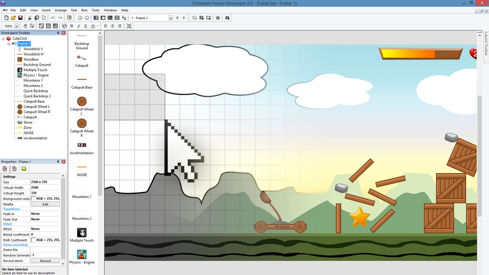

Exporters
Exporters Extensions
Extensions Interface
Interface Chowdren
Chowdren ClickStore
ClickStore Bug Tracker
Bug Tracker| |
This is an archive. |
| See the new ClickWiki at https://clickwiki.net. This version is just an archive for the purposes of migrating content to the new structure. |
Clickteam Fusion 2.5
|  | |
| Press image demonstrating the interface. | |
| Developer | Clickteam |
| Status | Released |
| Initial Release | Build 280 (4 years ago) |
| Stable Release | Build 287.9 (1 year ago) |
| Beta Release | Build 288.1 (1 year ago) |
| Platforms | |
| Languages | English, Français, Japanese |
| Purchase | |
| Links | SteamCommunity Hub (Free Edition) SteamCommunity Hub (Full Version) |
| Predecessor | Multimedia Fusion 2 |
{kind=link}
Clickteam Fusion 2.5, or simply Fusion 2.5 is an upgrade from Clickteam featuring a highly optimised runtime and new exporters. It is the successor to Multimedia Fusion 2 and marks an end to the The Games Factory brand. Likewise with Multimedia Fusion 2, there are multiple editions of the software, sharing the same interface but have different runtime agreements and features.
The software is compatible with previously saved MFA files, but once saved, cannot be opened in MMF2. Most extensions will continue working without needing updates from the developer. Extensions that were broken have since been fixed.
Contents
Upgrading from previous versions
New and refined features have been implemented with Fusion 2.5, here is a summary of them:
New features
General / Runtime
- Dropped the name "Multimedia".
- Integrated Unicode, HWA and language support.
- Improved User Interface, such as:
- Better docking features
- More organised properties window
- Skins
- Better compression of MFA files (particularly images containing alpha channels)
- Integrated Box2D Physics (7 new objects)
- New expressions for the System Object - Distance and Angle expressions.
- New events for the Timer Object - "Fire event after" and "Fire N events every M events".
- New "For each object" actions and conditions.
- New "Create by Name" action.
- Faster loops.
- Multiple Touch Object has gesture recognition.
- Debugger size and position is saved, as well as remembering objects in last session.
Frame Editor
- Supports frames larger than 32767.
- Status bar displays size and position of selected object.
- Paint tool (in toolbar) allows placing multiple objects into the frame without losing the selection. (old K&P/TGF1/C&C behaviour)
- Can hide or lock layers from the Layers bar.
- Extension Manager to download extensions from the server.
Event Editor & Event List Editor
- Skins can change the look, colours and icons.
- Scrolling is pixel-precise.
- New "Find Event" / "Find Object" commands.
- Event lines can be temporally disabled.
- Columns and rows are highlighted depending on the cursor's position.
- Tooltip shows for the current object at the top of a highlighted column.
Expression Editor
- Object list is displayed for easy access for an object's expressions.
- Menus can pop up either left or right clicks.
- TAB key jumps to the next non-defined parameter.
- New toolbar and features (such as changing font size and formatting)
- Expressions are easier to read by lacking restricting on spaces.
- Working undo and redo.
- New buttons for Random and Random Range.
- Real time syntax checking, with red/green colours.
- New "Where?" button can indicates a syntax error.
Picture Editor
- Files can be dropped into the editor.
- Improved import/export features - such as sprite sheets, setting the hotspot at predefined positions and cropping)
- Drawing colours can be swapped.
- Zoom is now done at the mouse position.
- New "G" button centers to the mass of the image.
- New RGB and hexadecimal colour edit boxes.
Changes
- The software, as well as EXEs produced will no longer run on Windows 9x, Windows NT 4.0 or Windows 2000. Windows XP SP3 or higher is required.
- Vitalize! and Java has been dropped, but still can be built if Multimedia Fusion 2 is installed on the same machine. A checkbox called "Show deprecated build types" will appear.
- If you had the Unicode exporter for MMF2, it will no longer work in MMF2.
- Exporter installations for MMF2 will require new ones for Fusion 2.5.
- MFA files created in Fusion 2.5 and not compatible with MMF2. The software will automatically create a backup when opening MMF2-based MFA files for the first time.
Read Francois' feature list post on the forums
Read Yves' notes about the product on the forums
Interface
As with Multimedia Fusion 2, the editor is split up into various interfaces, used in order to modify different aspects of applications or games.
- Storyboard Editor - For modifying frames and their fade transitions.
- Frame Editor - For modifying the objects, extensions and appearance of a frame.
- Event Editor - For defining the logic of the program, through actions, conditions and events.
- Data Elements - For modifying samples, binary data and external files used in a application.
- Toolbars - A customizable dockable interface throughout the program.
New in Fusion 2.5:
- Skins - For theming Clickteam Fusion 2.5.
Standard/Developer Only:
- Event List Editor - An expanded view to see conditions and actions.
Editions
Developer
{kind=link}
This is the complete version of the software, including a runtime that permits you to distribute credit-free, royalty-free. It also allows the use of Developer only extensions. The user will see a purple logo.
Standard
{kind=link}
This still features the same interface from the Developer edition, but is much more affordable and doesn't work with Developer only extensions and requires the user to credit Clickteam with a "Made with Fusion" logo somewhere in their product. Users who purchase this product will see a red logo.
Free
{kind=link}
A freeware version of Fusion 2.5 that exports to HTML5 with limitations. The user is allowed to distribute any creations they create, and it forces a splash when the exported HTML5 application is ran. Users of this product will see a silver logo.
Limitations of the free version editor
- You cannot load more than 1 application in the editor.
- Global events are disabled, as well as object behaviours.
- You cannot install other type of objects with the Extension Manager.
- You cannot export images with the Picture Editor.
- You cannot export or replace sound samples or music files with the Data Elements editor.
- Plus the restrictions of the limited HTML5 Exporter. (Thread)
Comparison
While all editions of the product share the same interface, the Developer version has more features and capabilities as well as the royalty, logo and credit free Runtime Agreement and the Free version only works with the limited HTML5 exporter and has other limitations.
See a comparison table for Clickteam Fusion 2.5
Exporters
An exporter enables a user to build an application or game to a different platform. These can be optionally purchased and allow developing for more than one platform (the default being Windows or Mac, depending which editor you purchased). Extensions may be incompatible and/or behave differently with exporters due to code differences, so it is essential to check the compatibility between them first.
See the Exporters page for a list of current exporters.
Mac Editor
Due to heavy roots with Microsoft Windows, it is not technically possible for a native port of the editor. Instead, Fusion is bundled inside a Wine wrapper powered by WineSkin. The exporters available today work on the Mac version with minimal fuss. Some exporter dependencies (such as the Android SDK and Java JDK for the Android Exporter) crossover with OS X's version, eliminating the need for a separate Windows copy. The Mac Exporter comes built in with the Mac Editor (as well as the normal Windows and limited HTML5 exporters).